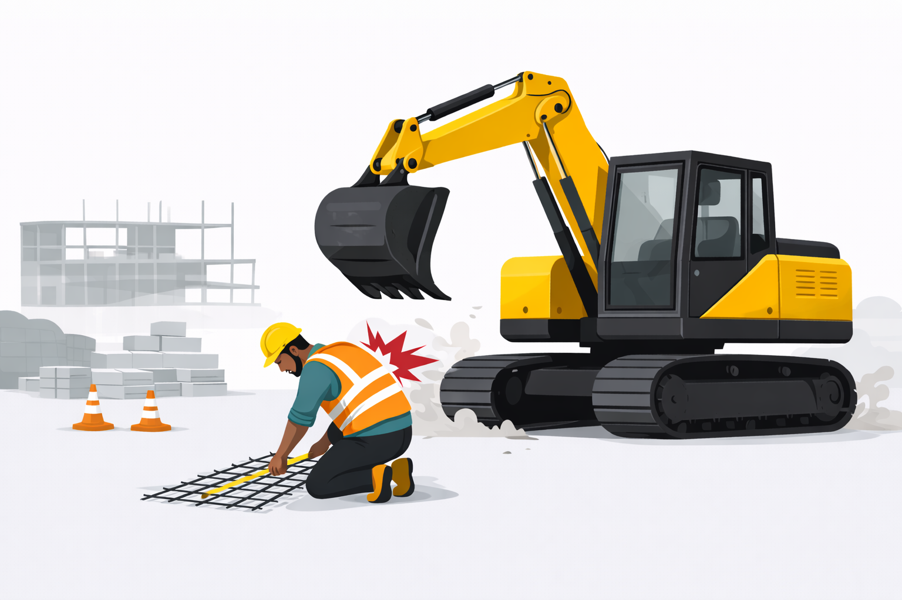
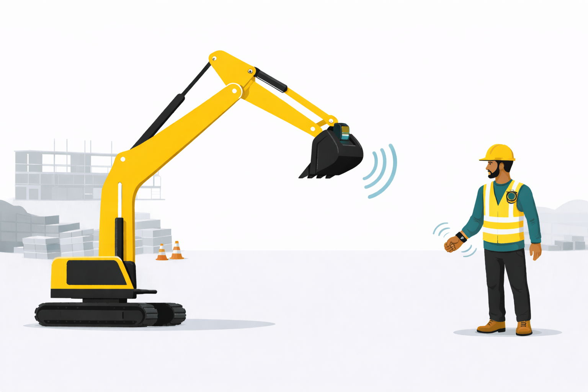

Site Safety to Prevent Machinery Collisions
For general contractors, subcontractors, and site managers, GenbaSense uses real-time UWB positioning and instant haptic alerts so workers stay aware of moving equipment—even in noise and low visibility.
Non-fatal construction injury cases per year in Japan—vehicle and machinery accidents are the most common.
Get in touchReal-Time Proximity Visibility
See where workers and moving machinery are in real time with UWB anchors (1 cm–50 m), so safety decisions are based on data—not guesswork.
AI-Driven Collision Prevention
AI tracks positions and triggers instant haptic feedback when a worker enters a danger zone—reducing collision risk without relying on sight or sound.
Works Without Network
Operates offline on site. Haptic alerts work in noisy environments and low-visibility conditions where alarms and radios fail.
Target customers
Who We Serve
GenbaSense helps construction companies reduce accidents, insurance costs, and downtime with wearable safety technology built for real site conditions.
General contractors
Lower accident rates and work stoppages with site-wide proximity awareness across crews and equipment.
Subcontractors
Protect workers in high-risk zones with haptic alerts that work when visibility and communication are limited.
Site managers & safety officers
Collect hot-zone analytics and evidence for ISO 45001 compliance and proactive risk management.
Equipment operators
Reduce blind-spot collisions with workers who receive instant tactile warnings before impact.
Site safety challenges
Real-World Challenges
GenbaSense addresses the structural risks that make construction sites dangerous and expensive—by making proximity measurable, alerting instantly, and turning movement into actionable data.

Machinery collisions are invisible until too late
Workers in blind spots around forklifts, cranes, and bulldozers often cannot see or hear approaching equipment in time.
Noise blocks auditory warnings
Alarms and radios fail on loud sites. Safety signals must reach workers through another channel—haptic feedback.
Low visibility conditions
Dust, weather, and night work reduce visual awareness. Traditional PPE does not close the awareness gap.
Accidents carry heavy financial cost
Lost workdays, rising insurance premiums, compensation (¥1M–¥10M), and work stoppages drain project budgets.
Safety data is not collected systematically
Hot zones and worker movement patterns are rarely measured, making proactive risk management difficult.
Compliance pressure is increasing
ISO 45001 and internal safety reviews demand evidence of proactive hazard control—not reactive reporting.
Accidents are a financial risk—not just a safety issue.
Our approach
How Our Technology Works
GenbaSense turns site movement into real-time safety—by detecting proximity, alerting with haptics, and analyzing patterns for continuous improvement.

Detect proximity with UWB
AI-powered UWB anchors track worker and equipment positions in real time—without network connectivity.
Alert instantly with haptics
Identifiable haptic patterns warn workers the moment they enter a danger zone—works in noise and low visibility.
Analyze hot zones
Movement and zone data feed analytics for safety meetings, compliance evidence, and site layout optimization.
Why GenbaSense
Construction Safety by the Numbers
Structural risks on site are measurable—and they compound without new approaches to worker awareness.
Non-fatal injury cases per year in Japan
Of daily wages paid for lost workdays after accidents
Compensation range for serious injuries
UWB positioning range—from centimeters to site scale
Customer cases
Use Cases
Real-world construction scenarios where proximity visibility and haptic alerts make an impact.


Cost reduction
Save on insurance and compensation through fewer accidents. Prevent delays and work stoppages on site.
Data & compliance
Hot-zone data for ISO 45001 evidence, proactive risk management, and internal safety meetings.
Team
GenbaSense is developed at OIST Innovation with a multidisciplinary founding team.
Funding
Past funding: $150K grant from OIST Innovation.
Raising a $400K pre-seed round via J-KISS (Japan SAFE) at a $2.5M post-money valuation. Allocation: product development, operations, and marketing.